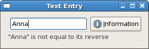

|
Gtk2Hs Tutorial |
||
|---|---|---|
|
|
||
The Entry widget allows text to be typed and displayed in a single line text box. A fairly large set of key bindings are supported by default. The user can choose between insert and overwite mode by toggling the Insert key.
Create a new Entry widget with the following function.
entryNew :: IO Entry |
To replace or get the text which is currently within the Entry widget:
entrySetText :: EntryClass self => self -> String -> IO () entryGetText :: EntryClass self => self -> IO String |
If we don't want the contents of the Entry to be changed by someone typing into it, we can change its editable state. We can also set visibility (e.g. for passwords), the maximum number of characters (0 if no maximum), whether the entry has a frame or not, the number of characters to leave space for, and a few other attributes. Text completion is also possible (see EntryCompletion in the API documentation for its use). The Entry attributes, which, of course, can be accessed with get and set are:
entryEditable :: EntryClass self => Attr self Bool -- default True entryVisibility :: EntryClass self => Attr self Bool -- default True entryMaxLength :: EntryClass self => Attr self Int -- 0 if no maximum, limit 66535 entryHasFrame :: EntryClass self => Attr self Bool -- default False entryWidthChars :: EntryClass self => Attr self Int -- default -1, no space set |
The Entry type is an instance of EditableClass and many attributes and methods are defined there. Some particularly useful ones are:
editableInsertText :: EditableClass self => self -> String -> Int -> IO Int editableDeleteText :: EditableClass self -> Int -> Int -> IO () editableSelectRegion :: EditableClass self => self -> Int -> Int -> IO () editableDeleteSelection :: EditableClass self -> IO () |
where the parameters of type Int denote the appropriate start or end positions. The user can also cut, copy and paste to/from the clipboard.
editableCutClipboard :: EditableClass self => self -> IO () editableCopyClipboard :: EditableClass self => self -> IO () editablePasteClipboard :: EditableClass self => self -> IO () |
These all take the current cursor position. You can get and set that position with:
editableGetPosition :: EditableClass self => self -> IO Int editableSetPosition :: EditableClass self => self -> Int |
The cursor is displayed before the character with the given (base 0) index in the widget. The value must be less than or equal to the number of characters in the widget. A value of -1 indicates that the position should be set after the last character in the entry.
The Editable class has a number of signals which use higher order functions (not discussed here). The Entry widget itself has a signal, which is sent after the user presses the Enter key:
onEntryActivate :: EntryClass ec => ec -> IO () -> IO (ConnectId ec) |
There are also signals sent when text is copied, cut or pasted to the clipboard, and when the user toggles overwrite/insert mode.
Statusbars are simple widgets used to display a text message. They keep a stack of the messages pushed onto them, so that popping the current message will re-display the previous text message. A statusbar has a resize grip by default, so the user can resize it.
In order to allow different parts of an application to use the same statusbar to display messages, the statusbar widget issues Context Identifiers which are used to identify different "users". The message on top of the stack is the one displayed, no matter what context it is in. Messages are stacked in last-in-first-out order, not context identifier order. A statusbar is created with:
statusbarNew :: IO Statusbar |
A new Context Identifier is generated by the following function, with a String used as textual description of the context:
statusbarGetContextId :: StatusbarClass self => self -> String -> IO ContextId |
There are three functions that can operate on statusbars:
statusbarPush :: StatusbarClass self => self -> ContextId -> String -> IO MessageId statusbarPop :: StatusbarClass self => self -> ContextId -> IO () statusbarRemove :: StatusbarClass self => self -> ContextId -> MessageId -> IO () |
The first, statusbarPush , is used to add a new message to the statusbar. It returns a MessageId, which can be passed later to statusbarRemove to remove the message with the given ContextId and MessageId from the statusbar's stack. Function statusbarPop removes the message highest in the stack with the given context identifier.
Statusbars, like progress bars, are used to display messages to the user about some ongoing operation. We'll simulate such an operation in the example below, by testing whether the text the user submits (by pressing Enter) is the same as its reverse, and pushing the result on the stack. The user can then see the results by pressing the information button, which pops the stack of messages. The first time the stack is empty, so the button is greyed out using:
widgetSetSensitivity :: WidgetClass self => self -> Bool -> IO () |
Note that status bars would not be the first choice here, since there is no testing if the stack is empty, but the example does show how they can be applied. The resize handle of the status bar is not very clear, but it is there, at the bottom right.

import Graphics.UI.Gtk
main :: IO ()
main= do
initGUI
window <- windowNew
set window [windowTitle := "Text Entry", containerBorderWidth := 10]
vb <- vBoxNew False 0
containerAdd window vb
hb <- hBoxNew False 0
boxPackStart vb hb PackNatural 0
txtfield <- entryNew
boxPackStart hb txtfield PackNatural 5
button <- buttonNewFromStock stockInfo
boxPackStart hb button PackNatural 0
txtstack <- statusbarNew
boxPackStart vb txtstack PackNatural 0
id <- statusbarGetContextId txtstack "Line"
widgetShowAll window
widgetSetSensitivity button False
onEntryActivate txtfield (saveText txtfield button txtstack id)
onPressed button (statusbarPop txtstack id)
onDestroy window mainQuit
mainGUI
saveText :: Entry -> Button -> Statusbar -> ContextId -> IO ()
saveText fld b stk id = do
txt <- entryGetText fld
let mesg | txt == reverse txt = "\"" ++ txt ++ "\"" ++
" is equal to its reverse"
| otherwise = "\"" ++ txt ++ "\"" ++
" is not equal to its reverse"
widgetSetSensitivity b True
msgid <- statusbarPush stk id mesg
return ()
|
|
Dialogs, Progress Bars |
|
To be continued |